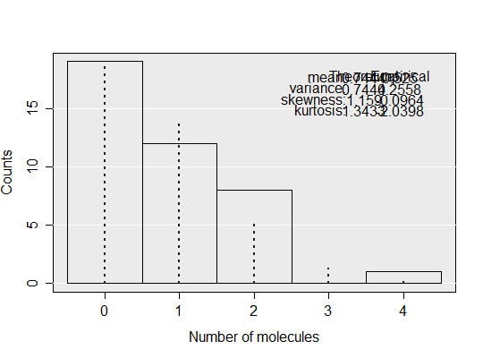

compare_dens(input, moments = TRUE, ...)
dpcr containing only one run.TRUE, both theoretical and empirical
moments are printed on the plot.plot function.Plot empirical and theoretical density of the result of the digital PCR experiment.
adpcr_big <- sim_adpcr(m = 35, n = 40, times = 50, pos_sums = FALSE, n_panels = 1) compare_dens(adpcr_big, moments = TRUE)